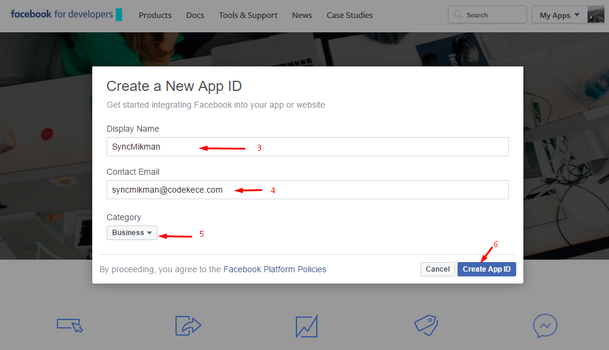

System Requiredment
- Mikrotik RouterOS v6.x.x.
- Mikrotik can be accessed from outside the network if using webhosting or cloudhosting.
- Web Server minimum Php v5.4.x.
- Web Server Support mail sending.
Uploading via FTP to Web Server
-
Download the zipped syncmikman to your local computer from shop.codekece.com and extract the ZIP file contents to a folder on your local computer.
- In the extracted folder you will find 'syncmikman' Extract this file .
-
Using an FTP client to access your host web server.
-
Upload the files in the folder /var/www or create new folder in /var/www/subdomain folder web server.
-
Or Upload the files in the folder public_html or create new folder in /public_html/subdomain folder web server.
Import Database to phpMyadmin
- Open phpMyadmin your server and create new database with name sync_mikman.
- Open database sync_mikman and go to import menu.
- Browse the database 'sync_mikman.sql'in folder syncmikman local computer, and klik go.
- After finish inport open table user_mikman in database and change ip_mik, port_mik, username_mik, password_mik
according to your router.
Setting Sycmikman
- Open file config.php in folder inc and change .
$my_user = 'your_user_databse'; // DB USER
$my_password = 'your_password_database'; // DB PASSWORD
$my_db = 'your_datanase_name'; // DB NAME
Open Sycmikman in browser, default username and password to login in system is admin / admin.
Open setting menu, enter Dns Name Hotspot Mikrotik is url login hotspot mikrotik or gateway hotspot mikrotik,(open mikrotik via winbox go to menu ip->hotspot->server profile->general).
Setting Social Login
- Seeting socila page login, open menu social -> setting.
- IP ADDRESS is ip public or ip address or ddns name your mikrotik.
- PORT is port API your mikrotik.
- USERNAME is enter username login your mikrotik.
- PASSWORD is enter password login your mikrotik.
- HOTSPOT PROFILE is user profile settings such as speed limit, uptime etc. (open mikrotik via winbox go to menu ip->hotspot->user profile).
- DNS NAME is url login hotspot mikrotik or gateway hotspot mikrotik,(open mikrotik via winbox go to menu ip->hotspot->server profile->general).
- LOGIN PAGE URL is url login syncmikman example http://syncmikman.codekece.id
- Setting login with facebook, Enter FACEBOOK APP ID and FACEBOOK APP SECRET KEY to get code follow this steap.
- Setting login with twitter, Enter TWITTER CONSUMER KEY and WITTER CONSUMER SECRET to get code follow this steap.
- Setting login with google, EnterGOOGLE CLIENT ID, GOOGLE CLIENT SECRET and GOOGLE HOME URL to get code follow this steap.
- To Setting login social facebook, twitter, and google
first of all add walled garden each social media to mikrotik by running the following command in the terminal through winbox.
/ip hotspot walled-garden
add dst-host=*facebook.com
add dst-host=*facebook.net
add dst-host=*akamaihd.net
add dst-host=*fbcdn.net
add dst-host=*google.com
add dst-host=*googleapis.com
add dst-host=*gstatic.com
add dst-host=*googleusercontent.com
add dst-host=*google.co.id
add dst-host=*googleapis.co.id
add dst-host=*gstatic.co.id
add dst-host=*googleusercontent.co.id
add dst-host=*twitter.com
add dst-host=*twimg.com
add dst-host=*abs.twitter.com
add dst-host=your_domain_syncmikman
Open file login.htm in hotspot folder in zipped syncmikman in local pc, edit url syncmikman.codekece.com with your domain syncmikman.
Open winbox, go to menu files, drag and drop folder hotspot (in folder syncmikman your local pc) to winbox.
Facebook oAuth
- Go to facebook Developers.
- Press the button will pop up a list of my apps and the apps menu, select add a new app.
- You will see a pop up that contains a form for the identity of your app, input name app, email app, chose category and press button Create App ID.

- Go to menu Setting -> Basic and press button Add flatform.
- You will see a pop up menu and chose website.
- Enter url your syncmikman login and press button save changes in buttom screen, example http://syncmikman.codekece.id/login
- Go to menu App Review and change Make yourapp public ? from No to Yes
- And the latter went to the dashboard menu, here you will find the app id and secret key in hidden press show to see the secret key.
- Login in twitter and go to link https://apps.twitter.com, and press button
Create New App
- You will be directed to create apps page, fill out all the forms and customize to your data as in the example image below and press Create your Twitter application.

- And you can directed to Application Management page press tab Keys and Access Tokens you will find TWITTER CONSUMER KEY and TWITTER CONSUMER SECRET.
Google oAuth
- Go to the Google Developers Console
- Select an existing project, or create a new project by clicking Create Project:
- In the Project name field, type in a name for your new project.
- In the Project ID field, the console has created project ID. Optionally you can type in a project ID for your project. But project ID must be unique worldwide.
- Click on the Create button and the project to be created in some seconds. Once the project is created successfully, the project name would be appearing at the top of the left sidebar.
- In the left sidebar, select APIs under the APIs & auth section. A list of Google APIs appears.
- Find the Google+ API service and set its status to Enable.
- In the sidebar, select Credentials under the APIs & auth section.
- In the OAuth section of the page, select Create New Client ID.
- Create Client ID dialog box would be appearing for choosing application type.
- In the Application type section of the dialog, select Web application and click on the Configure consent screen button.
- Choose Email address, enter the Product name and save the form.
- In the Authorized JavaScript origins field, enter your app origin. If you want to allow your app to run on different protocols, domains, or subdomains, then you can enter multiple origins.
- In the Authorized redirect URI field, enter the redirect URL.
- Click on Create Client ID.
- The Client ID for web application will be generated. Note the Client ID and Client secret for later use that will need to use to access the APIs.